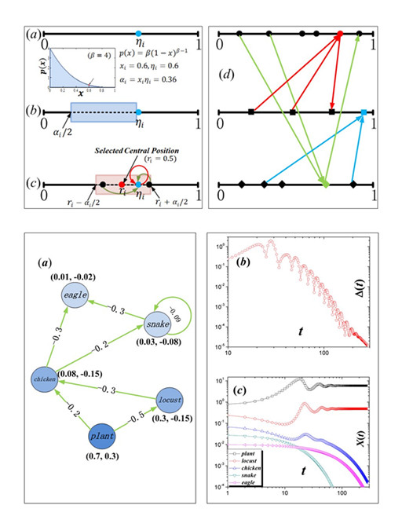
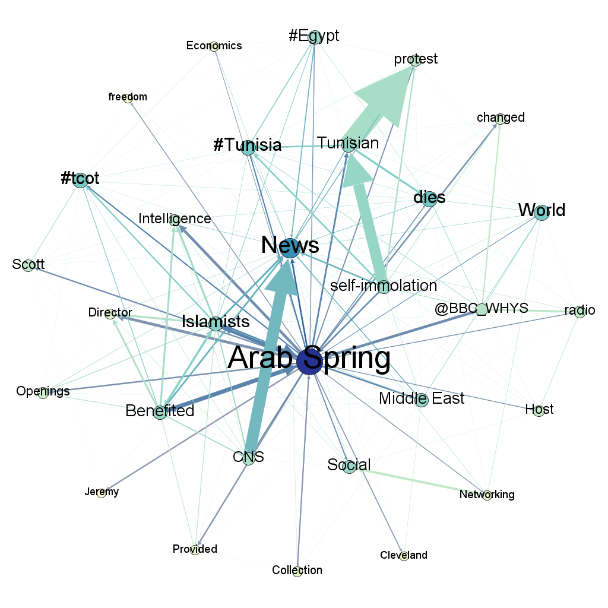
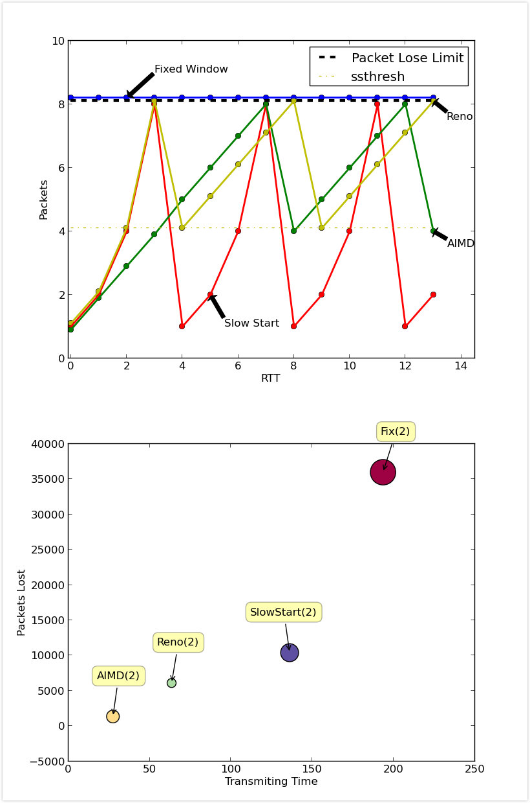

|
Research
ICM2013–Modeling and Protecting Global Ecological Networks
[Solution for MCM/ICM(Mathematical/Interdisciplinary Contest for Modeling) 2013]
In Collaboration with Rui-qi Li and Xiang-yu Zhao, Faculty Advisor: Tao Zhou(Feb 5th, 2013)
|
 |
In ICM2013, we are asked to build a model to reflect some aspects of Earth's health.
We model both structure and dynamics of the global ecological network.
In our model, a number of local networks are connected via long-range interactions associated with migrant species[see figure 1(d)] and each local network is generated by a trophic-level-based stochastic model[see figure 1(a)-(c)].
Predator-prey dynamics is described by a networked Lotka-Volterra model that accounts for the self-suppression effects on basal species, the biomass flow from preys to predators and the negative feedback loops[see figure 2(a)].
We hold three conclusions:
(i) The global ecological network is organized in a clustered small-world manner, with in-degree distribution more heterogeneous then out-degree distribution.
(ii) Protecting endangered species, popular preys and predicted-to-be-extinct species is more effective than randomly selected species or influential predators.
(iii) Protecting after entering the fast extinction stage is more effective than at the begining.
Key techniques used in our solution:
Networked Lotka-Volterra Dynamics
Pining Control
Missing Link Analysis
LeaderRank Algorithm
See our sulution paper for more details:ICM2013-Solution
|
Finding Key facts in Arab Spring
Advised by Prof.Hui Xiong (March 12th,2013)
|
 |
The series of protests and demonstrations across the Middle East and North Africa that commenced in 2010 has become known as the “Arab Spring”. Interested in this large-sclale movements, I started a data mining experiment via social data to get the feeling of it.
DataSets
Using Twitter's search API, I extracted 1000 recent tweets that has keyword “Arab Spring” and make a frequent-words list. Based on the ranking, 30 Top words are selected for further study by making each keyword query in twitter and then make their own frequency-words list.
Viasualization
To find relationships between every two keywords. I made a tag-network where nodes indicate the key words and directed edges of (A->B) indicate the frequency that A's query mentioned B.
In the tag-network, We have 30 nodes and 204 edges.
|
Analysis
Two crucial countries Egypt and Tunisa are high-lighted in the network, cos the are the first to witness major uprisings.
“Economics, freedom, change”, these three words may hint the causes of this event. Economic decline, unemployment, extreme poverty is all related to economics. In recent decades, rising living standars and literacy rates, as well as the increased availability of higher education, have resulted in and improved Human Development Index in the affected countries. The tension between rising aspirations and a lack of government reform may have been a contributing factor in all the protests.
There is a big arrow from “Benifit” to “Islamists”, it seems that islamists are the winner of “Arab Spring”, because the West would not be able to control it.
Adapt TCP congestion control methods to UDP application
Experimental Task in Tencent (Augest 15th, 2013)
|
 |
UDP is universally used in instant message(IM) servers here in Tencent because its efficiency. But the problem of UDP transmission is poor reliability and lack of congestion control mechanism.
With Linux socket API, I simulated TCP's reliable transmition rule and congestion control methods. To solve reliable transmit problem, I adapt batch Acknowledgements(ACK) for sender and reciever. And import cwnd to control sending window of data.
I tried four methods:
Fixed Window: Sending 256 Packets each RTT.
Slow Start: Set cwnd=1 for the begining, double cwnd each RTT if all sending packets are acknowledged.
AIMD(Additive increase/multiplicative decrease): Set cwnd=1 for the beginning, add 1 to cwnd for each success RTT and halve cwnd for each failed RTT(packet loss happend).
TCP Reno: It is a combination of “Slow Start” and “AIMD”, if cwnd <= ssthresh, Using Slow Start, else using AIMD.
These four methods are demonstrated in figure 1 in the left.
Experiment Results
Each methods is tested 5 times in two different bandwidth condition.We tested the Packet Lost and Transmiting Time and draw a plot picture in figure 2.
Result shows that AIMD > Reno > Slow Start > Fix Window.
For further detail, please refer to the reports.
|
|